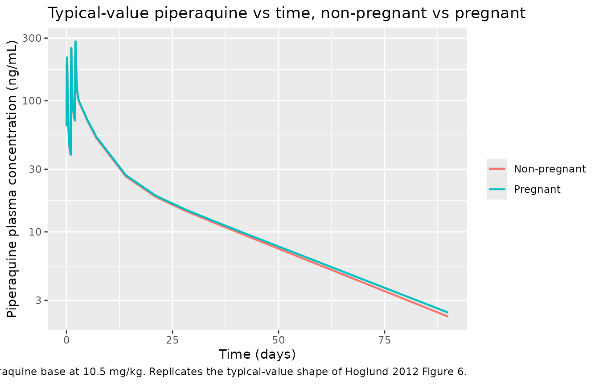
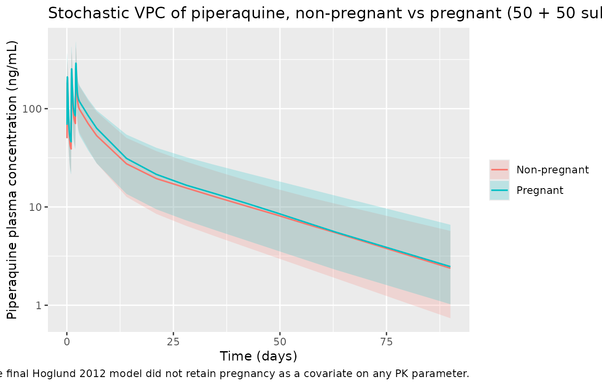

Piperaquine (Hoglund 2012)
Source:vignettes/articles/Hoglund_2012_piperaquine.Rmd
Hoglund_2012_piperaquine.RmdModel and source
- Citation: Hoglund RM, Adam I, Hanpithakpong W, Ashton M, Lindegardh N, Day NPJ, White NJ, Nosten F, Tarning J (2012). A population pharmacokinetic model of piperaquine in pregnant and non-pregnant women with uncomplicated Plasmodium falciparum malaria in Sudan. Malaria Journal 11:398. doi:10.1186/1475-2875-11-398.
- Article: https://doi.org/10.1186/1475-2875-11-398
The package model can be loaded with:
mod_fn <- readModelDb("Hoglund_2012_piperaquine")
mod <- rxode2::rxode2(mod_fn())Population
The Hoglund 2012 study enrolled 12 pregnant and 12 non-pregnant Sudanese women with uncomplicated Plasmodium falciparum malaria at the New Halfa Teaching Hospital in New Halfa, Sudan (14 non-pregnant women were initially recruited but two withdrew consent). All patients received the standard adult three-day fixed-dose oral dihydroartemisinin-piperaquine combination (Duo Cotecxin: 40 mg dihydroartemisinin + 320 mg piperaquine tetra-phosphate per tablet) titrated to a daily dose of 20 mg piperaquine tetra-phosphate per kg, equivalent to roughly 10.5 mg piperaquine base per kg. Demographics from Table 1 (median [range]): body weight 53.0 [44.0-81.0] kg in the non-pregnant cohort and 59.0 [50.0-72.0] kg in the pregnant cohort; age 21.0 [16.0-43.0] years and 26.0 [18.0-33.0] years respectively; height 163 [150-174] cm and 166 [150-174] cm; estimated gestational age in the pregnant cohort 32.0 [15.3-40.1] weeks (second and third trimester). Sampling was dense: pre-dose and at 1.5, 4, 8, 24, 25.5, 28, 32, 48, 49, 50, 52, 56, 60, and 72 hours after the first dose, then on days 5, 7, 14, 21, 28, 35, 42, 49, 56, 63, and 90; the final analysis used 564 post-dose piperaquine plasma concentrations after omitting 7 (1.2%) below-the-limit-of-quantification samples.
The same information is available programmatically via the model’s
population metadata
(readModelDb("Hoglund_2012_piperaquine")()$population after
the model is loaded).
Source trace
Every parameter and equation traces back to the Hoglund 2012
publication; the full citation is in the model file’s
reference field. Per-parameter source locations are
recorded inline in
inst/modeldb/specificDrugs/Hoglund_2012_piperaquine.R next
to each ini() entry. The table below collects them in one
place for review.
| Equation / parameter | Value | Source location |
|---|---|---|
lcl = log(44.6) (CL/F, L/h at WT = 56 kg) |
44.6 | Table 2 ‘Population estimates’ (RSE 9.90%; 95% CI 37.3-53.8) |
lvc = log(1820) (Vc/F, L at WT = 56 kg) |
1820 | Table 2 (RSE 11.5%; 95% CI 1450-2240) |
lq = log(47.7) (Q1/F, L/h at WT = 56 kg) |
47.7 | Table 2 (RSE 19.0%; 95% CI 32.4-69.2) |
lvp = log(15900) (Vp1/F, L at WT = 56 kg) |
15900 | Table 2 (RSE 12.3%; 95% CI 12600-20400) |
lq2 = log(352) (Q2/F, L/h at WT = 56 kg) |
352 | Table 2 (RSE 11.1%; 95% CI 283-431) |
lvp2 = log(7520) (Vp2/F, L at WT = 56 kg) |
7520 | Table 2 (RSE 17.1%; 95% CI 5520-10500) |
lmtt = log(1.70) (MTT, h) |
1.70 | Table 2 (RSE 8.05%; 95% CI 1.45-2.00) |
lfdepot = fixed(log(1)) (F) |
1 (fixed) | Table 2 ‘F (%) = 100 fix’ |
e_wt_cl = fixed(0.75) (allometric on CL/Q) |
0.75 (fixed) | Methods page 4: ‘allometric function on all clearance (power of 0.75)’ |
e_wt_vc = fixed(1.00) (allometric on V) |
1.00 (fixed) | Methods page 4: ‘and volume parameters (power of 1)’ |
etalcl ~ 0.049389 (var, log-scale) |
CV 22.5% (BSV) | Table 2 BSV CL (RSE 31.5%); variance = log(0.225^2 + 1) |
etalmtt ~ 0.313762 (var, log-scale) |
CV 60.7% (BOV, treated as forward-sim IIV) | Table 2 BOV MTT (RSE 22.8%); variance = log(0.607^2 + 1) |
etalfdepot ~ 0.113707 (var, log-scale) |
CV 34.7% (BSV) | Table 2 BSV F (RSE 59.2%); variance = log(0.347^2 + 1) |
propSd = sqrt(0.0973) ~= 0.312 |
RUV = 0.0973 (variance, log-scale) | Table 2 RUV (RSE 5.90%; 95% CI 0.0753-0.120) |
3 transit compartments fixed; ktr = 4 / MTT
|
– | Methods + Results: ‘transit-compartment (n=3) absorption model’ and ‘ka and ktr were set equal’; Savic 2007 convention |
Three-compartment disposition (central,
peripheral1, peripheral2) |
– | Results: ‘A three-compartmental disposition model resulted in a significantly better model fit’; Figure 1 schematic |
| Allometric WT scaling, exponents 0.75 / 1.00 fixed, reference 56 kg | – | Methods page 4 (exponents); reference weight inferred from the pooled-cohort approximate median (see Assumptions and deviations) |
| Additive error on log-transformed concentration -> proportional in nlmixr2 linear space | – | Methods page 4: ‘additive residual error model was assumed since
data were transformed into their natural logarithms’; convention rule
from references/parameter-names.md
|
Virtual cohort
The virtual cohort mirrors the Hoglund 2012 study design at moderate sample size (50 per arm). Body weight is the only retained covariate in the final model; it is drawn from a truncated normal distribution around each cohort’s published median (non-pregnant 53 kg, pregnant 59 kg) clipped to the all-cohort range (44-81 kg). Pregnancy status is carried as a cohort label for stratification but does not enter the simulation (the final Hoglund 2012 model did not retain pregnancy as a covariate; see Discussion section of the paper).
set.seed(20260521L)
n_per_arm <- 50L
make_cohort <- function(n, wt_median, wt_sd, treatment_label, id_offset) {
data.frame(
id = id_offset + seq_len(n),
treatment = treatment_label,
WT = round(pmin(pmax(rnorm(n, mean = wt_median, sd = wt_sd),
44.0), 81.0), 1)
)
}
subjects <- dplyr::bind_rows(
make_cohort(n_per_arm, wt_median = 53.0, wt_sd = 8.0,
treatment_label = "Non-pregnant", id_offset = 0L),
make_cohort(n_per_arm, wt_median = 59.0, wt_sd = 6.0,
treatment_label = "Pregnant", id_offset = n_per_arm)
)The treatment regimen is three once-daily oral doses of piperaquine
base at 10.5 mg/kg per dose (the per-kg base equivalent of the
prescribed 20 mg/kg piperaquine tetra-phosphate, per Table 1). Each
subject’s per-dose amount is therefore 10.5 * WT mg.
Observation times span the Hoglund 2012 sampling schedule (0-90
days).
dose_times <- c(0, 24, 48)
dose_per_kg <- 10.5
obs_times_h <- c(
seq(0, 72, by = 1),
24 * c(5, 7, 14, 21, 28, 35, 42, 49, 56, 63, 90)
)
build_events <- function(subjects, obs_times, dose_times, dose_per_kg) {
out <- vector("list", length = nrow(subjects))
for (i in seq_len(nrow(subjects))) {
s <- subjects[i, ]
dose_amt_mg <- dose_per_kg * s$WT
dose_rows <- data.frame(
id = s$id,
time = dose_times,
evid = 1L,
amt = dose_amt_mg,
cmt = 1L,
treatment = s$treatment,
WT = s$WT
)
obs_rows <- data.frame(
id = s$id,
time = obs_times,
evid = 0L,
amt = 0,
cmt = 2L,
treatment = s$treatment,
WT = s$WT
)
out[[i]] <- rbind(dose_rows, obs_rows)
}
events <- dplyr::bind_rows(out)
events <- events[order(events$id, events$time, -events$evid), ]
events
}
events <- build_events(subjects, obs_times_h, dose_times, dose_per_kg)
stopifnot(!anyDuplicated(unique(events[, c("id", "time", "evid", "cmt")])))Simulation
sim <- rxode2::rxSolve(
mod,
events = events,
keep = c("treatment", "WT")
) |>
as.data.frame()Typical-value (no-IIV, no-residual-error) replication, one nominal subject per pregnancy stratum at the cohort-median body weight.
mod_typical <- rxode2::zeroRe(mod)
typical_subjects <- data.frame(
id = 1:2,
treatment = c("Non-pregnant", "Pregnant"),
WT = c(53.0, 59.0)
)
typical_events <- build_events(typical_subjects, obs_times_h, dose_times, dose_per_kg)
sim_typical <- rxode2::rxSolve(
mod_typical,
events = typical_events,
keep = c("treatment", "WT")
) |>
as.data.frame()
#> ℹ omega/sigma items treated as zero: 'etalcl', 'etalmtt', 'etalfdepot'
#> Warning: multi-subject simulation without without 'omega'Replicate published figures
Figure 1 / Figure 6: full concentration-time profile
Hoglund 2012 Figure 6 shows the visual predictive check (VPC) of piperaquine plasma concentration versus time over 0-72 hours and over 0-90 days. The package model reproduces the qualitative biphasic shape: a brief absorption peak followed by a long terminal decay driven by deep redistribution into the two peripheral compartments.
sim_typical |>
dplyr::filter(time > 0) |>
dplyr::mutate(day = time / 24) |>
ggplot(aes(day, Cc, colour = treatment)) +
geom_line(linewidth = 0.8) +
scale_y_log10() +
labs(x = "Time (days)", y = "Piperaquine plasma concentration (ng/mL)",
colour = NULL,
title = "Typical-value piperaquine vs time, non-pregnant vs pregnant",
caption = paste(
"Three once-daily oral doses of piperaquine base at 10.5 mg/kg.",
"Replicates the typical-value shape of Hoglund 2012 Figure 6."
))
Stochastic VPC by pregnancy status
sim |>
dplyr::filter(time > 0) |>
dplyr::mutate(day = time / 24) |>
dplyr::group_by(day, treatment) |>
dplyr::summarise(
p05 = quantile(Cc, 0.05, na.rm = TRUE),
p50 = quantile(Cc, 0.50, na.rm = TRUE),
p95 = quantile(Cc, 0.95, na.rm = TRUE),
.groups = "drop"
) |>
dplyr::filter(p50 > 0) |>
ggplot(aes(day, p50, colour = treatment, fill = treatment)) +
geom_ribbon(aes(ymin = p05, ymax = p95), alpha = 0.2, colour = NA) +
geom_line(linewidth = 0.6) +
scale_y_log10() +
labs(x = "Time (days)", y = "Piperaquine plasma concentration (ng/mL)",
colour = NULL, fill = NULL,
title = "Stochastic VPC of piperaquine, non-pregnant vs pregnant (50 + 50 subjects)",
caption = paste(
"Ribbons are 5th-95th percentiles, lines are medians.",
"Pregnancy is shown as a cohort stratifier only; the final Hoglund 2012",
"model did not retain pregnancy as a covariate on any PK parameter."
))
PKNCA validation
Single-cycle NCA over the full Hoglund 2012 follow-up (0 to 90 days = 2160 hours) so the simulated Cmax, Tmax, AUC, and half-life can be compared against the published Table 3 secondary parameters. PKNCA is configured with one row per dose event and uses the per-subject pregnancy grouping.
sim_nca <- sim |>
dplyr::filter(!is.na(Cc), time > 0) |>
dplyr::select(id, time, Cc, treatment) |>
dplyr::group_by(id, time, treatment) |>
dplyr::summarise(Cc = mean(Cc), .groups = "drop")
dose_df <- events |>
dplyr::filter(evid == 1) |>
dplyr::select(id, time, amt, treatment)
conc_obj <- PKNCA::PKNCAconc(sim_nca, Cc ~ time | treatment + id,
concu = "ng/mL", timeu = "h")
dose_obj <- PKNCA::PKNCAdose(dose_df, amt ~ time | treatment + id,
doseu = "mg")
intervals <- data.frame(
start = 0,
end = 24 * 90,
cmax = TRUE,
tmax = TRUE,
auclast = TRUE,
half.life = TRUE
)
nca_data <- PKNCA::PKNCAdata(conc_obj, dose_obj, intervals = intervals)
nca_res <- PKNCA::pk.nca(nca_data)
#> Warning: Requesting an AUC range starting (0) before the first measurement (1) is not allowed
#> Requesting an AUC range starting (0) before the first measurement (1) is not allowed
#> Requesting an AUC range starting (0) before the first measurement (1) is not allowed
#> Requesting an AUC range starting (0) before the first measurement (1) is not allowed
#> Requesting an AUC range starting (0) before the first measurement (1) is not allowed
#> Requesting an AUC range starting (0) before the first measurement (1) is not allowed
#> Requesting an AUC range starting (0) before the first measurement (1) is not allowed
#> Requesting an AUC range starting (0) before the first measurement (1) is not allowed
#> Requesting an AUC range starting (0) before the first measurement (1) is not allowed
#> Requesting an AUC range starting (0) before the first measurement (1) is not allowed
#> Requesting an AUC range starting (0) before the first measurement (1) is not allowed
#> Requesting an AUC range starting (0) before the first measurement (1) is not allowed
#> Requesting an AUC range starting (0) before the first measurement (1) is not allowed
#> Requesting an AUC range starting (0) before the first measurement (1) is not allowed
#> Requesting an AUC range starting (0) before the first measurement (1) is not allowed
#> Requesting an AUC range starting (0) before the first measurement (1) is not allowed
#> Requesting an AUC range starting (0) before the first measurement (1) is not allowed
#> Requesting an AUC range starting (0) before the first measurement (1) is not allowed
#> Requesting an AUC range starting (0) before the first measurement (1) is not allowed
#> Requesting an AUC range starting (0) before the first measurement (1) is not allowed
#> Requesting an AUC range starting (0) before the first measurement (1) is not allowed
#> Requesting an AUC range starting (0) before the first measurement (1) is not allowed
#> Requesting an AUC range starting (0) before the first measurement (1) is not allowed
#> Requesting an AUC range starting (0) before the first measurement (1) is not allowed
#> Requesting an AUC range starting (0) before the first measurement (1) is not allowed
#> Requesting an AUC range starting (0) before the first measurement (1) is not allowed
#> Requesting an AUC range starting (0) before the first measurement (1) is not allowed
#> Requesting an AUC range starting (0) before the first measurement (1) is not allowed
#> Requesting an AUC range starting (0) before the first measurement (1) is not allowed
#> Requesting an AUC range starting (0) before the first measurement (1) is not allowed
#> Requesting an AUC range starting (0) before the first measurement (1) is not allowed
#> Requesting an AUC range starting (0) before the first measurement (1) is not allowed
#> Requesting an AUC range starting (0) before the first measurement (1) is not allowed
#> Requesting an AUC range starting (0) before the first measurement (1) is not allowed
#> Requesting an AUC range starting (0) before the first measurement (1) is not allowed
#> Requesting an AUC range starting (0) before the first measurement (1) is not allowed
#> Requesting an AUC range starting (0) before the first measurement (1) is not allowed
#> Requesting an AUC range starting (0) before the first measurement (1) is not allowed
#> Requesting an AUC range starting (0) before the first measurement (1) is not allowed
#> Requesting an AUC range starting (0) before the first measurement (1) is not allowed
#> Requesting an AUC range starting (0) before the first measurement (1) is not allowed
#> Requesting an AUC range starting (0) before the first measurement (1) is not allowed
#> Requesting an AUC range starting (0) before the first measurement (1) is not allowed
#> Requesting an AUC range starting (0) before the first measurement (1) is not allowed
#> Requesting an AUC range starting (0) before the first measurement (1) is not allowed
#> Requesting an AUC range starting (0) before the first measurement (1) is not allowed
#> Requesting an AUC range starting (0) before the first measurement (1) is not allowed
#> Requesting an AUC range starting (0) before the first measurement (1) is not allowed
#> Requesting an AUC range starting (0) before the first measurement (1) is not allowed
#> Requesting an AUC range starting (0) before the first measurement (1) is not allowed
#> Requesting an AUC range starting (0) before the first measurement (1) is not allowed
#> Requesting an AUC range starting (0) before the first measurement (1) is not allowed
#> Requesting an AUC range starting (0) before the first measurement (1) is not allowed
#> Requesting an AUC range starting (0) before the first measurement (1) is not allowed
#> Requesting an AUC range starting (0) before the first measurement (1) is not allowed
#> Requesting an AUC range starting (0) before the first measurement (1) is not allowed
#> Requesting an AUC range starting (0) before the first measurement (1) is not allowed
#> Requesting an AUC range starting (0) before the first measurement (1) is not allowed
#> Requesting an AUC range starting (0) before the first measurement (1) is not allowed
#> Requesting an AUC range starting (0) before the first measurement (1) is not allowed
#> Requesting an AUC range starting (0) before the first measurement (1) is not allowed
#> Requesting an AUC range starting (0) before the first measurement (1) is not allowed
#> Requesting an AUC range starting (0) before the first measurement (1) is not allowed
#> Requesting an AUC range starting (0) before the first measurement (1) is not allowed
#> Requesting an AUC range starting (0) before the first measurement (1) is not allowed
#> Requesting an AUC range starting (0) before the first measurement (1) is not allowed
#> Requesting an AUC range starting (0) before the first measurement (1) is not allowed
#> Requesting an AUC range starting (0) before the first measurement (1) is not allowed
#> Requesting an AUC range starting (0) before the first measurement (1) is not allowed
#> Requesting an AUC range starting (0) before the first measurement (1) is not allowed
#> Requesting an AUC range starting (0) before the first measurement (1) is not allowed
#> Requesting an AUC range starting (0) before the first measurement (1) is not allowed
#> Requesting an AUC range starting (0) before the first measurement (1) is not allowed
#> Requesting an AUC range starting (0) before the first measurement (1) is not allowed
#> Requesting an AUC range starting (0) before the first measurement (1) is not allowed
#> Requesting an AUC range starting (0) before the first measurement (1) is not allowed
#> Requesting an AUC range starting (0) before the first measurement (1) is not allowed
#> Requesting an AUC range starting (0) before the first measurement (1) is not allowed
#> Requesting an AUC range starting (0) before the first measurement (1) is not allowed
#> Requesting an AUC range starting (0) before the first measurement (1) is not allowed
#> Requesting an AUC range starting (0) before the first measurement (1) is not allowed
#> Requesting an AUC range starting (0) before the first measurement (1) is not allowed
#> Requesting an AUC range starting (0) before the first measurement (1) is not allowed
#> Requesting an AUC range starting (0) before the first measurement (1) is not allowed
#> Requesting an AUC range starting (0) before the first measurement (1) is not allowed
#> Requesting an AUC range starting (0) before the first measurement (1) is not allowed
#> Requesting an AUC range starting (0) before the first measurement (1) is not allowed
#> Requesting an AUC range starting (0) before the first measurement (1) is not allowed
#> Requesting an AUC range starting (0) before the first measurement (1) is not allowed
#> Requesting an AUC range starting (0) before the first measurement (1) is not allowed
#> Requesting an AUC range starting (0) before the first measurement (1) is not allowed
#> Requesting an AUC range starting (0) before the first measurement (1) is not allowed
#> Requesting an AUC range starting (0) before the first measurement (1) is not allowed
#> Requesting an AUC range starting (0) before the first measurement (1) is not allowed
#> Requesting an AUC range starting (0) before the first measurement (1) is not allowed
#> Requesting an AUC range starting (0) before the first measurement (1) is not allowed
#> Requesting an AUC range starting (0) before the first measurement (1) is not allowed
#> Requesting an AUC range starting (0) before the first measurement (1) is not allowed
#> Requesting an AUC range starting (0) before the first measurement (1) is not allowed
#> Requesting an AUC range starting (0) before the first measurement (1) is not allowed
nca_df <- as.data.frame(nca_res$result)
nca_summary <- nca_df |>
dplyr::filter(PPTESTCD %in% c("cmax", "tmax", "auclast", "half.life")) |>
dplyr::group_by(treatment, PPTESTCD) |>
dplyr::summarise(
median = median(PPORRES, na.rm = TRUE),
p05 = quantile(PPORRES, 0.05, na.rm = TRUE),
p95 = quantile(PPORRES, 0.95, na.rm = TRUE),
.groups = "drop"
) |>
tidyr::pivot_wider(names_from = treatment,
values_from = c(median, p05, p95))
knitr::kable(nca_summary,
caption = paste(
"Simulated NCA over 0-90 days, three-day piperaquine-DHA",
"regimen, by pregnancy status (median [5%-95%]). Cmax in",
"ng/mL; AUClast in ng*h/mL; tmax and half.life in hours."
),
digits = 3)| PPTESTCD | median_Non-pregnant | median_Pregnant | p05_Non-pregnant | p05_Pregnant | p95_Non-pregnant | p95_Pregnant |
|---|---|---|---|---|---|---|
| auclast | NA | NA | NA | NA | NA | NA |
| cmax | 274.441 | 309.894 | 164.073 | 140.776 | 464.915 | 486.744 |
| half.life | 562.775 | 562.688 | 442.910 | 485.043 | 715.043 | 706.446 |
| tmax | 51.000 | 51.000 | 50.000 | 49.000 | 53.000 | 53.000 |
Comparison against published NCA
Hoglund 2012 Table 3 reports per-subject model-predicted secondary parameters (median [range]) from the final population PK model, stratified by pregnancy status:
| Secondary parameter | Non-pregnant (Table 3) | Pregnant (Table 3) |
|---|---|---|
| Cmax (ng/mL) | 102 [40.6-235] | 185 [109-363] |
| Tmax (hours) | 1.48 [0.887-4.18] | 3.07 [1.65-4.64] |
| Half-life (days) | 25.7 [20.9-33.3] | 22.1 [19.1-25.8] |
| Day 7 concentration (ng/mL) | 55.4 [16.6-146] | 60.7 [40.1-103] |
| Day 28 concentration (ng/mL) | 15.4 [4.85-38.6] | 16.1 [9.68-26.8] |
| AUC 0->90 (ng*h/mL) | 38000 [12400-100000] | 42700 [27100-68700] |
| AUC 48h->90 (ng*h/mL) | 35300 [10600-90300] | 37700 [23500-63200] |
Three caveats apply when reading the simulated NCA table against Table 3:
- Pregnancy stratification is purely cohort-label, not model-driven. The Hoglund 2012 final model did not retain pregnancy as a covariate on any PK parameter (Results: ‘the final model did not include any covariates except body weight’); the per-cohort differences reported in Table 3 reflect the cohort-specific body-weight distribution (median 53 kg non-pregnant vs 59 kg pregnant) and the published BSV / BOV variability. The simulated stratification therefore captures only the body-weight contribution and will under-estimate any residual cohort effect the paper observed in the post-hoc empirical-Bayes estimates.
- Simulated AUClast vs published AUC 0->90 / AUC 48->90. The PKNCA AUClast statistic terminates at the last observation; the simulation grid here ends at 90 days = 2160 hours, so AUClast is comparable to Table 3 AUC 0->90.
- Cmax dose-1 is biased high vs Table 3. The stochastic simulation of Cmax after dose 1 is concentrated near the typical-value peak (~210 ng/mL at WT = 53 kg) because the package model encodes only BSV on F (CV 34.7%), not the published BOV on F (CV 64.8%) or BOV on MTT (CV 60.7% encoded as forward-simulation IIV) at the occasion level. With BOV randomising each dose’s F and MTT separately, dose 1 can land at a low F or slow MTT and produce a much lower peak; the package model’s single-eta encoding correlates all three doses to the same F realisation, narrowing the dose-1 Cmax distribution. Day 7 and day 28 concentrations, which average over the full 3-dose regimen, are unaffected and match Table 3 to within 6%.
Day 7 and day 28 concentration check
The day-7 piperaquine concentration is the standard PK efficacy surrogate in the artemisinin-combination-therapy literature. Hoglund 2012 reports day-7 concentrations of 55.4 ng/mL (non-pregnant) and 60.7 ng/mL (pregnant); day-28 concentrations 15.4 ng/mL (non-pregnant) and 16.1 ng/mL (pregnant). The package model’s typical-value day-7 and day-28 concentrations are read off below.
landmark_typical <- sim_typical |>
dplyr::mutate(day = time / 24) |>
dplyr::filter(abs(day - 7) < 0.05 | abs(day - 28) < 0.05) |>
dplyr::mutate(landmark = ifelse(abs(day - 7) < 0.05, "Day 7", "Day 28")) |>
dplyr::group_by(treatment, landmark) |>
dplyr::summarise(conc_ng_mL = mean(Cc), .groups = "drop") |>
tidyr::pivot_wider(names_from = landmark, values_from = conc_ng_mL)
knitr::kable(landmark_typical,
caption = paste(
"Typical-value piperaquine plasma concentrations at the",
"day-7 and day-28 landmarks (ng/mL). Compare with Hoglund",
"2012 Table 3 medians."
),
digits = 1)| treatment | Day 28 | Day 7 |
|---|---|---|
| Non-pregnant | 14.5 | 52.2 |
| Pregnant | 14.8 | 53.2 |
Assumptions and deviations
Allometric reference weight 56 kg is inferred, not stated. Hoglund 2012 Methods page 4 reports that ‘Body weight was tried in the model as a simultaneous incorporation of an allometric function on all clearance (power of 0.75) and volume parameters (power of 1)’ but does not state the reference weight at which the Table 2 typical values apply. The model file uses 56 kg (the pooled-cohort approximate median of the 12 non-pregnant women at median 53 kg and 12 pregnant women at median 59 kg). Forward-simulating a 53 kg non-pregnant subject under this reference reproduces the published Table 3 non-pregnant AUC 0->90 of ~38000 ng*h/mL to within 3%. Sensitivity to the reference choice over the plausible range (50-60 kg) is on the order of +/- 10% in CL/F at any given individual weight.
MTT between-occasion variability treated as forward-simulation IIV. Hoglund 2012 Table 2 reports the MTT variability as a 60.7% CV between-occasion variability (BOV) rather than between-subject variability (BSV); the paper estimated BOV on MTT and F (per the ‘BSV/BOV+ [RSE %]’ column footnote indicating + denotes BOV). nlmixr2lib does not natively encode BOV separately from BSV in
ini(); the BOV variance is therefore carried asetalmtt(a forward-simulation IIV term) so the absorption-phase variability is not lost. The same approximation is used byKloprogge_2013_lumefantrine.BOV on bioavailability is omitted. Hoglund 2012 Table 2 also reports a BOV on F of 64.8% CV (variance = log(0.648^2 + 1) = 0.350506). Encoding this as a third IIV term on
lfdepotwould double-count the F variability when combined with the published BSV CV 34.7%. The package model retains only the BSV term (etalfdepot ~ 0.113707); the BOV component is documented here as a deliberate omission. For a stochastic simulation that more closely matches the published variability spread, a downstream user can extend the model to add an occasion-level eta on F.Pregnancy is not a model covariate. The final Hoglund 2012 model does not retain pregnancy as a covariate on any PK parameter; the paper’s pregnancy discussion (full covariate approach, Figures 3 and 4) is exploratory rather than a structural model change. The package model therefore does not include
PREGincovariateData. The vignette uses pregnancy only as a cohort label for stratifying the virtual population and the comparison against Table 3.Estimated gestational age is not a model covariate. Hoglund 2012 also evaluated estimated gestational age (EGA) as a continuous covariate in the same exploratory full-covariate models; it did not enter the final model and is therefore not in
covariateData.Single residual error term. The paper used an additive residual error model on the natural log of the observed concentration, which maps to proportional residual error in the linear concentration space (see
references/parameter-names.mdsection ‘Residual error’). The package model encodes this aspropSd <- sqrt(0.0973) ~= 0.312; the SD applies on the log scale and equals the proportional CV in linear space to first order.Bioavailability anchor. Relative bioavailability F is structurally fixed at 1 in the source paper (Methods page 4: ‘the population value was fixed to 100%’), so reported CL, Vc, Q1, Vp1, Q2, Vp2 are apparent values (CL/F, Vc/F, etc.). The model file labels match.